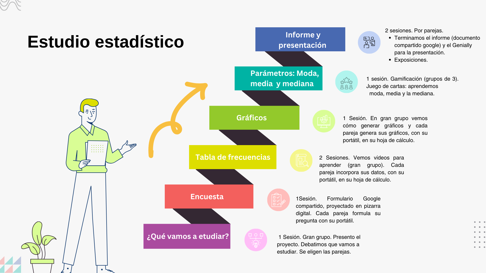
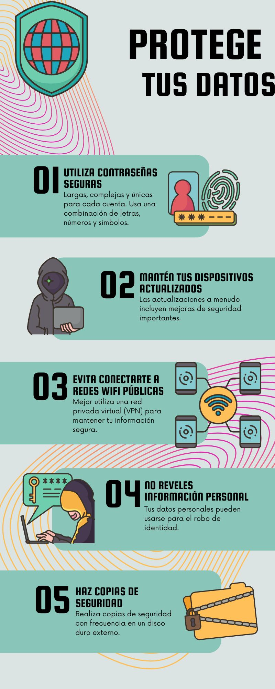
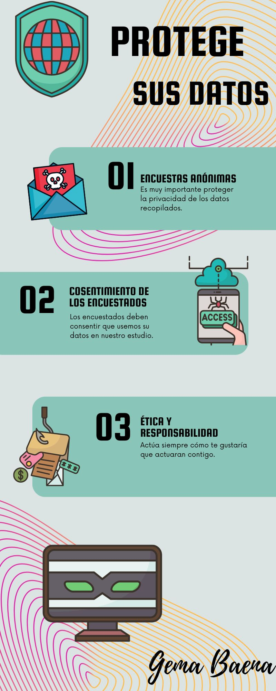
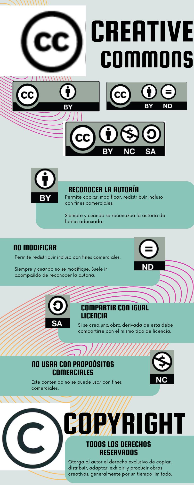
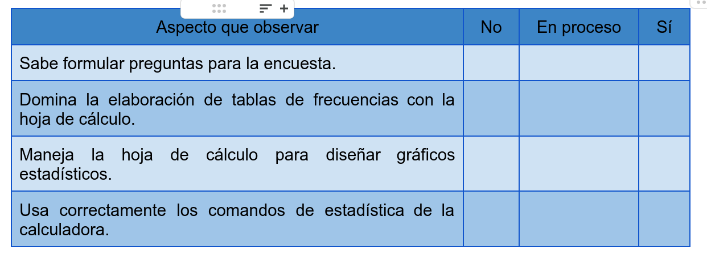
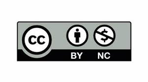

Estudio estadístico 1º E.S.O.
Análisis estadísticos de hábitos de vida saludables como forma de concienciación para mejorarlos.
Bienvenidos y bienvenidas.
En esta Situación de aprendizaje vamos a estudiar nuestros hábitos de sueño, comidas, horas de pantallas...(o las variables a que a vosotros os parezcan más interesantes) y vamos a ver si en el Bárbara de Braganza tenéis buenos hábitos o no. Si no es así, esta Situación de Aprendizaje será la base para descubrirlo y ponernos manos a la obra para mejorarlos.
1 - Pasos a seguir. Producto final
Para guiar el proceso de aprendizaje he diseñado el siguiente mapa mental. Así, en todo momento, podemos identificar por dónde vamos, qué llevamos aprendido y qué nos queda por aprender.
También vamos a analizar un par de ejemplos, de estudios similares a los que vosotros vais a realizar, para que podáis saber que espero que consigáis como producto final en esta Situación de Aprendizaje.

Algunos ejemplos del producto final
Ciberseguridad
La ciberseguridad nos proporciona las habilidades y el conocimiento necesarios para navegar de manera segura en el mundo digital en constante evolución y protegerse a sí mismos y a los demás de los riesgos en línea.
Debemos ser responsables en línea y ser conscientes de las consecuencias de nuestras acciones en Internet. Esto incluye el respeto por los derechos de autor, el comportamiento ético en línea y el reconocimiento de los límites de privacidad de otros.
Aquí os dejo una infografía con algunas de las reglas básicas de ciberseguridad.
  
2 - Encuesta
Elaboramos la encuesta.
Vamos a realizar una única encuesta para todo el grupo-clase.
Cada pareja aportará las preguntas que considere necesario. El conjunto de todas vuestras preguntas será nuestra encuesta.
Podéis observar que el cuestionario ya contiene dos preguntas edad y sexo. Estas variables la he introducido yo porque nos vendrán muy bien para analizar si hay diferencias entre chicas y chicos, o según la edad.
Es fundamental formular una buena pregunta. Es muy importante que no haya respuestas múltiples. En matemáticas se dice que las modalidades (posibles respuestas) deben ser exhaustivas y excluyentes. Es decir, en las opciones que le dais como respuesta deben estar todas las posibles respuestas, y no puede haber más de una respuesta válida.
Para acceder al formulario podéis entrar desde el correo que os ha llegado con un formulario Google compartido, o pinchando aquí.
Cuando esté la encuesta terminada os pasaré el enlace que debéis compartir con las personas que deseáis que formen parte de vuestra muestra.
3 - Tablas de frecuencias, gráficos y parámetros.
4. Informe final y presentación digital
Tarea
Subir vuestro informe y vuestra presentación hecha con Genially a Moodle centros.
Informe
Con todo lo aprendido estamos en condiciones de realizar un buen informe.
Para realizar el informe debéis crear un documento Google compartido con vuestra pareja. En este documento vamos a recoger todo lo trabajado en esta Situación de Aprendizaje. El informe debe tener los siguientes puntos:
a) Portada : Título del trabajo, autores. Con una buena presentación.
b) Introducción: Explicar qué estamos estudiando en esta situación de aprendizaje. Quién es la población y la muestra. Describir sus variables de estudio.
c) Tablas de frecuencias.
d) Gráficos
e) Parámetros estadísticos: Moda, media (cuando sea posible) y mediana.
f) Análisis de resultados y Conclusiones.
NOTA: Para la elaboración del informe tened en cuenta la rúbrica de evaluación, la podéis encontra el subapartado "Rúbricas y lista de cotejo" de la página de Guía didáctica.
Presentación digital.
Ya estamos finalizando.
En el informe habéis recogido todo el estudio con el máximo detalle. En este apartado se trata de poner solo la información más relevante en un Genially. Debe ser lo más visual posible. Esta presentación pretende de ser un apoyo visual para vuestra exposición oral.
NOTA: Para la elaboración de la presentación tened en cuenta la rúbrica de evaluación, la podéis encontra el subapartado "Rúbricas y lista de cotejo" de la página de Guía didáctica.
5. Exposición
Aquí finaliza esta Situación de Aprendizaje.
Ahora os toca explicarle a vuestros compañeros cuál era vuestra variable estadística, que datos habéis recogidos, y que información se puede extraer de estos datos.
Es fundamental, que estéis atentos a las exposiciones de las otras parejas. Pues luego tendremos que extraer conclusiones de forma conjunta.
NOTA: Tened en cuenta la rúbrica de evaluación de la exposición oral, la podéis encontra el subapartado "Rúbricas y lista de cotejo" de la página de Guía didáctica.
Guía didáctica
|
TAREA |
CRITERIO DE EVALUACIÓN |
AGRUPAMIENTO |
TIEMPO APROXIMADO |
HERRAMIENTA QUE SE LE SUGERIRÁ AL ALUMNADO |
|
Formulación de vuestra pregunta para la encuesta. |
MAT 1.8.1. Comunicar ideas, conceptos y procesos sencillos, utilizando el lenguaje matemático apropiado,empleando diferentes medios, incluidos los digitales, oralmente y por escrito, al describir, explicar y justificar sus conocimientos matemáticos. |
Parejas |
1 sesión |
Formulario Google. |
|
Elaboración de tablas de frecuencias y gráficos. |
MAT 1.7.1. Representar conceptos, procedimientos, información y resultados matemáticos usando herramientas digitales sencillas, y formas de representación adecuadas para visualizar ideas y estructurar procesos matemáticos, interpretando y resolviendo problemas del entorno cercano y valorando su utilidad para compartir información. |
Parejas |
3 sesiones |
Hoja de cálculo. |
|
Elaboración del informe final y de una presentación digital. |
MAT 1.8.1. Comunicar ideas, conceptos y procesos sencillos, utilizando el lenguaje matemático apropiado,empleando diferentes medios, incluidos los digitales, oralmente y por escrito, al describir, explicar y justificar sus conocimientos matemáticos. MAT 1.10.1. Colaborar activamente y construir relaciones saludables en el trabajo de las matemáticas en equipos heterogéneos, respetando diferentes opiniones, iniciándose en el desarrollo de destrezas: de comunicación efectiva, de planificación, de indagación, de motivación y confianza en sus propias posibilidades y de pensamiento crítico y creativo, tomando decisiones y realizando juicios informados. |
Parejas |
2 sesiones |
Documento google y Genially. |
Rúbricas y lista de cotejo
Para superar esta situación de aprendizaje es imprescindible haber aprendido lo que se recoge en la siguiente lista de cotejo. En cada sesión yo iré marcando a cada uno/a si domináis lo trabajado en esa sesión.
Si alguno de los apartados aparecen no conseguidos, o en proceso habrá que seguir trabajándolos. Yo os iré dando las indicaciones necesarias según las necesidades de cada uno/a.

Una vez adquiridos todos estos saberes, pasaré a daros una nota numérica que la obtendré del informe que habéis elaborado y de vuestra exposición. Para ello utilizaré las siguientes rúbricas.
Rúbricas
- Rúbrica para la exposición oral.pdf (Ventana nueva)
- Rúbrica para el informe.pdf (Ventana nueva)
- Rúbrica para evaluar la formulación de preguntas en la encuesta- criterio MAT 1.8.1. (Ventana nueva)
- Rúbrica para evaluar la elaboración de tablas de frecuencias y gráficos-Criterio: MAT 1.7.1 (Ventana nueva)
Herramientas de gestión del aula
Moodle Centros
Como siempre trabajaremos con Moodle Centros, a través de esta plataforma debéis entregarme vuestros trabajos. Así como dejar todas las dudas que os surjan en el foro.
Portal Rayuela
Ya me he puesto en contacto con vuestras familias a través del Portal Rayuela. Les he comunicado en qué va a consistir esta Situación de Aprendizaje, qué tareas vamos a realizar y con qué criterios de evaluación están relacionadas. Cuando yo vaya introduciendo notas en el cuaderno de Rayuela les irán llegando de manera inmediata.
Como siempre iré introduciendo las observaciones oportunas sobre comportamiento y actitud, o faltas de asistencia. Y estaré a sus disposición para cualquier duda que les surja.
Créditos
Descripción: La actividad se basa en la recopilación y análisis de datos reales, lo que brinda a los estudiantes la oportunidad de aplicar los conceptos estadísticos aprendidos en situaciones concretas y significativas. Esto fomenta el aprendizaje práctico y la comprensión de la relevancia de la estadística en su entorno.
Área del conocimiento: Educación Secundaria - Matemáticas - Estadística
Fecha de creación: 27 - 03 - 2024
Formato: Objeto de Aprendizaje en eXeLearning (.elp)
Propósitos:
La situación de aprendizaje no solo se centra en el desarrollo de habilidades estadísticas, sino que también promueve habilidades transversales como el trabajo en equipo, la comunicación efectiva y el pensamiento crítico, que son fundamentales en el desarrollo integral de los estudiantes de 1º ESO.
Sugerencias didácticas: Se puede utilizar en el aula o a través de una plataforma de aprendizaje virtual.
Autoría:Gema María Baena Marzo.
Licencia

Descargable
Obra publicada con Licencia Creative Commons Reconocimiento No comercial 4.0